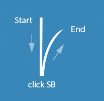

- Demo 1, principe...
- Start : click bouton économiser
- Transition : ouverture écran Super Bankin
- Animation : le contenu de l'écran descent par le haut
- Click BT GO : flip screen vers le contenu, offres SB
- Autre transition : mouvement de l'écran à 45° ou 90°
+ fondu avec offres SB - CF. synthèse schéma... - Demo 2, principe...
- Start : écran menu, bouton économiser
- Tempo : animation différente pour le BT et les promos
- Mouvement vertical des promos et apparition du BT GO
- Click BT GO : flip screen vers le contenu, offres SB
- Autre transition : mouvement horizontal de l'écran
- Développements finaux via iOS et Android...
Nouveau Service de l'application Bankin...Les mouvements décrits ici correspondent à deux intentions :
un acte de validation et une identification ludique du contenu
(message implicite, offres ciblées client, " être malin, mobile ") - Back